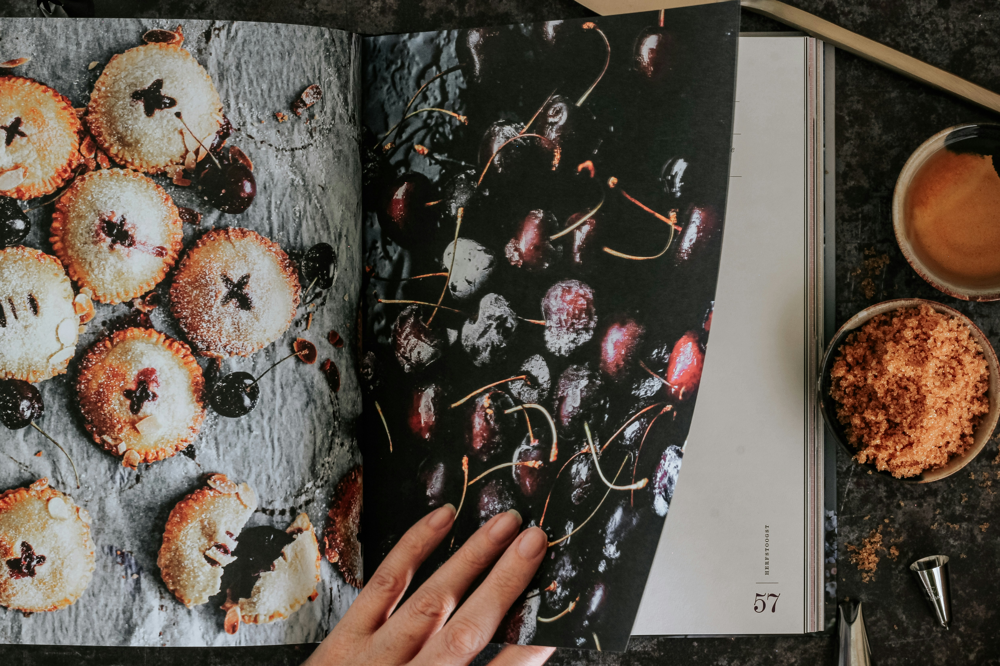
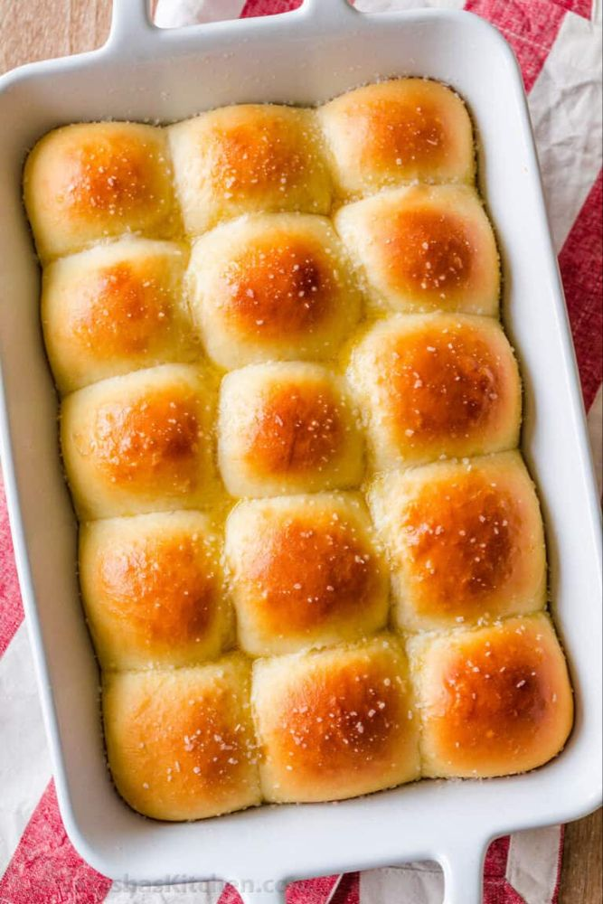
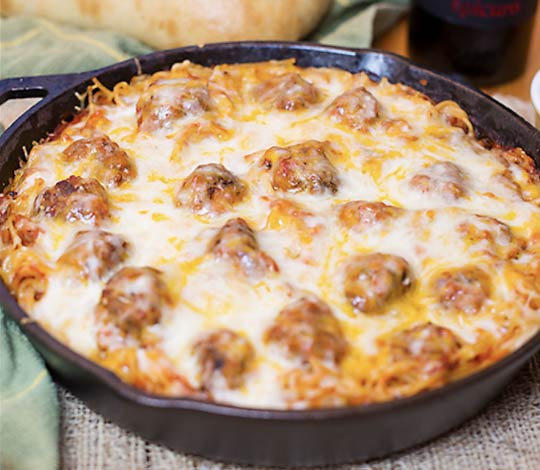

Cookbook Recipes

You don't have to be a trained chef to make insanely delicious food.
Delish has all the easiest recipes, plus the coolest tricks and
shortcuts to make cooking the most fun you've ever had.
Contents
Homemade Yeast Rolls
These are the softest, fluffiest yeast rolls I have ever made.
An easy to make recipe for dinner rolls perfect for any
occasion.

Ingredients
-
2 cups milk
-
2 tablespoons instant dry yeast
-
¼ cup granulated sugar
-
⅓ cup unsalted butter soft + 1 extra tablespoon butter
for brushing
-
2 eggs
-
6 ¼ cups all-purpose flour
-
2 teaspoons fine sea salt
Instructions
-
Heat the milk until lukewarm. Don't overheat the milk or
it will spoil the yeast.
-
Mix: Pour the lukewarm milk, active dry yeast, and
granulated sugar into a large bowl (or the stand mixer bowl).
Add the soft butter and the lightly beaten eggs. Mixwell
either with the kneading attachments of the stand mixer or
with a handheld mixer fitted with dough hooks.
-
If not using a machine, stir well with a wooden spoon until
the ingredients are mixed.
-
Knead: Add the flour and the salt to the bowl and mix
with the dough hooks until the dough starts pulling away from
the sides of the bowl.
-
If making the dough without a machine, stir in about half of
the flour using a wooden spoon. Start adding the remaining
flour, stirring with the spoon for as long as possible. When
the dough becomes too sturdy to stir, turn it on the lightly
floured working surface and knead with your hands until the
dough is only slightly sticky and still soft.
-
You could add 1 or 2 tablespoons extra flour, if
necessary, but keep in mind that the dough should remain soft.
-
Let rise: Place the dough in a clean bowl, cover with a
kitchen towel and let the dough rise for 1 hour and 30 minutes
in a warm place, it should double in size.
-
Form yeast rolls: Lightly grease a large baking tray
of about 30x40 cm/12x16 inches. Punch down the dough. Form 24
rolls. Place them on the baking tray leaving a little space
between them. Cover with a kitchen towel and let rise for
another hour.
-
In the meantime, preheat the oven to 180 degrees
Celsius/ 375 degrees Fahrenheit.
-
Bake: When the rolls have nicely risen, they will
come together, touching each other on the tray. Bake the easy
yeast rolls for 12 to 14 minutes, until nicely golden.
-
Brush them immediately with 1 tablespoon melted
(or very soft) butter.
-
Serve
Italian Meatballs
These easy oven-baked Italian meatballs are incredibly tender
and juicy with irresistible flavors that will have you craving for
more. Made with ground beef, onion, garlic, parmesan cheese, and
parsley, these meatballs are seasoned to perfection and ready to be
served in just 30 minutes!

Ingredients
-
1/2 cup Italian bread crumbs
-
2/3 cup milk
-
1 lb ground beef or your choice of meat
-
1/4 medium onion finely diced or grated
-
2 cloves garlic minced
-
1 large egg beaten
-
1 tsp salt or to taste
-
1/2 tsp black pepper
-
1/4 cup parmesan cheese preferably Parmigiano-Reggiano
-
1 tbsp fresh parsley or 1 tsp dried parsley
Instructions
-
Preheat the oven to 400°F (200°C) and line a baking sheet with
parchment paper or a baking mat.
-
In a large mixing bowl, add Italian bread crumbs and milk.
Combine well and set aside while preparing the other
ingredients, for at least 5 minutes.
-
Add ground beef, onion, garlic, egg, salt, black pepper,
parmesan cheese, and parsley to the breadcrumb mixture, and
mix with your hands until just combined. Do not overmix.
-
Portion onto the prepared baking sheet (using a cookie or ice
cream scoop will make it easier). Wet your hands with water,
and roll meatballs into 2" diameter balls.
-
Bake for about 18-20 minutes, or until the meatballs have
reached an internal temperature of 165˚F (74°C). Remove from
oven and drain off any excess fat.
Baked Spaghetti
Spaghetti & Meatballs is a perfect family friendly meal. Baked Spaghetti
& Meatballs is cooked in one pan, topped with lots of cheese, and baked
until hot, bubbly, and melted ooey gooey! Baked Spaghetti & Meatballs takes
regular Spaghetti and Meatballs from ordinary to extra-ordinary!

Ingredients
-
Meatballs (from Italian Meatballs recipe)
-
24 oz jar marinara sauce
-
1/2 yellow onion diced
-
3 cloves garlic crushed
-
1 tsp Italian seasoning
-
2 TBSP olive oil
-
3/4 # spaghetti noodles
-
1-2 cups grated cheese I used half colby-jack, half mozzarella
-
1/2 cup grated parmesan
Instructions
-
In large cast iron skillet, sauté onions in olive oil over
med/low heat. Add in garlic and continue sautéing until onions
are tender.
-
Add cooked meatballs.
-
Add marinara sauce and tsp Italian seasoning.
-
Heat over med/low heat for about 20-30 minutes.
-
In separate large pot, cook spaghetti noodles according to package
directions (under cook by 2 minutes).
-
With large slotted spoon, scoop meatballs from sauce and set aside.
-
Scoop cooked spaghetti (with large slotted spoon) into marinara
sauce. Add in about 1/2 cup pasta cooking water. Gently stir until
pasta is fully coated with sauce.
-
Add cooked meatballs to top of spaghetti.
-
Top with grated cheese & parmesan cheese.
-
Bake at 350 for approx 20-30 minutes or until hot and bubbly and
cheese is melted.
Chocolate Crinkle Cookies
A classic, chocolate crinkle cookies rolled in powdered sugar baked
to chewy fudgy perfection. The ultimate classic cookie to
add to your collection.

Ingredients
-
1 cup All-Purpose Flour
-
½ cup Cocoa Powder
-
1 teaspoon Baking Powder
-
¼ teaspoon Salt
-
½ cup Granulated White Sugar
-
¼ cup Brown Sugar
-
¼ cup Vegetable Oil
-
2 Eggs
-
1 teaspoon Vanilla Extract
-
½ cup Powdered Sugar
Instructions
-
In a small bowl, combine all-purpose flour, cocoa powder,
baking powder and salt.
-
In the bowl of your stand mixer with the paddle attachment,
beat together vegetable oil, white sugar and brown sugar until
smooth. Add vanilla extract, eggs and beat until smooth.
-
Add flour mixture to the wet ingredients and beat until fully
combined. Dough will be very sticky. Cover bowl with plastic
wrap and place in the fridge for at least 3 hours up to 24
hours to chill.
-
Preheat oven to 350 degrees.
-
Add powdered sugar to a small bowl.
-
Line a baking sheet with parchment paper. Roll about 1-½
tablespoons of cookie dough into a ball. Then generously roll
into powdered sugar and transfer to the baking sheet. Repeat
with remaining dough.
-
Bake cookies for 11-12 minutes. Transfer cookies to a cooling
rack to let cool for a few minutes prior to eating. Enjoy!